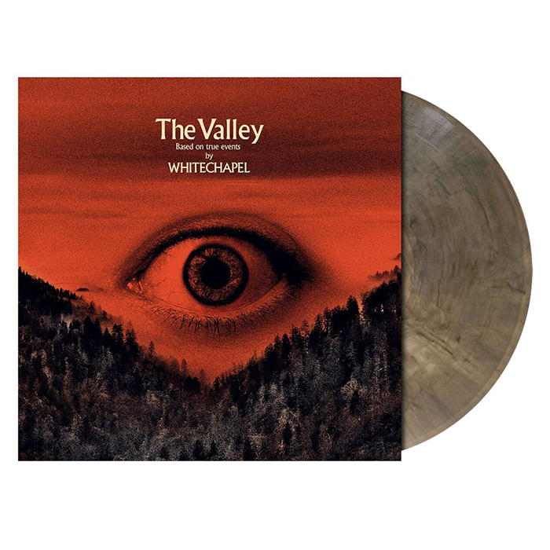

The Valley is the seventh studio album by the American deathcore band Whitechapel.
It was released through Metal Blade Records on March 29, 2019 to very positive reviews.
On April 14, 2020, an acoustic version of "Hickory Creek" was released. It marks the first Whitechapel song to include entirely clean vocals.
Loudwire named it one of the 50 best metal albums of 2019.
It was released through Metal Blade Records on March 29, 2019 to very positive reviews.
On April 14, 2020, an acoustic version of "Hickory Creek" was released. It marks the first Whitechapel song to include entirely clean vocals.
Loudwire named it one of the 50 best metal albums of 2019.
- ARTIST: whitechapel
- ALBUM: The valley
- ARTIKELNR:: MJT005R